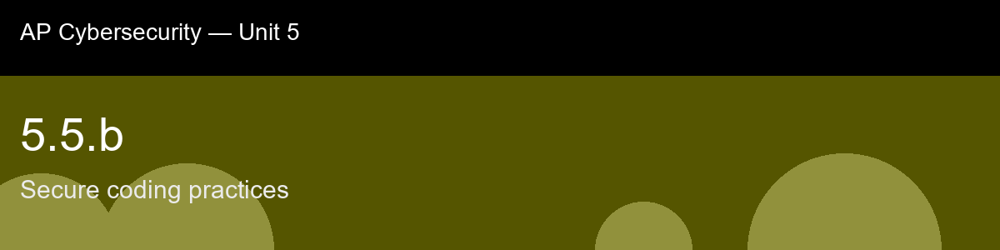

5.5.b, Secure coding practices
Before class today. Input validation (5.5.a) stops one specific failure, trusting untrusted data, but it is only
one piece of a much larger discipline called secure coding: the set of habits and defaults a
development team builds into every line of code so that vulnerabilities are prevented by
construction rather than caught after the fact.
The intuition to hold onto: The reframe worth making before this lecture: input validation (5.5.a) closes one specific door, but secure coding is the discipline of never building the other doors in the first place. Parameterized queries don't depend on catching a malicious string at all, they make it structurally impossible for user data to ever be parsed as SQL syntax, which is a stronger guarantee than any filter, because a filter can miss a variant it wasn't designed to catch and a parameterized query has nothing to miss.
A myth worth busting before we start: "Secure coding is just input validation done well." → Input validation is one practice among several; parameterized queries, secrets management, least privilege, and dependency management each close a different, independent class of vulnerability.
Today's goal: List the core secure-coding practices that prevent common vulnerability classes, explain why each practice works, and audit a piece of application configuration or code against those practices to identify violations.
Handout: pre-lecture-handout.docx.

## 5.5.b, Secure coding practices
**Before class today.** Input validation (5.5.a) stops one specific failure, trusting untrusted data, but it is only
one piece of a much larger discipline called **secure coding**: the set of habits and defaults a
development team builds into *every* line of code so that vulnerabilities are prevented by
construction rather than caught after the fact.
**The intuition to hold onto:** The reframe worth making before this lecture: input validation (5.5.a) closes one specific door, but secure coding is the discipline of never building the other doors in the first place. Parameterized queries don't depend on catching a malicious string at all, they make it structurally impossible for user data to ever be parsed as SQL syntax, which is a stronger guarantee than any filter, because a filter can miss a variant it wasn't designed to catch and a parameterized query has nothing to miss.
**A myth worth busting before we start:** "Secure coding is just input validation done well." → Input validation is one practice among several; parameterized queries, secrets management, least privilege, and dependency management each close a different, independent class of vulnerability.
**Today's goal:** List the core secure-coding practices that prevent common vulnerability classes, explain why each practice works, and audit a piece of application configuration or code against those practices to identify violations.
Handout: `pre-lecture-handout.docx`.